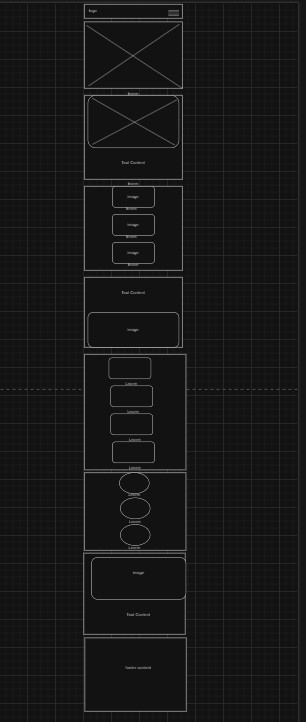
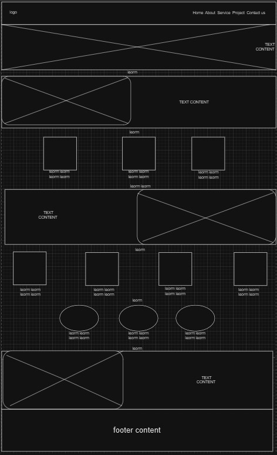

Site Name
Site Name: Alpha SolarTech
Reason: The name reflects leadership in solar technology solutions, combining innovation with clean energy services.
Site Purpose
The website will serve as a platform to promote the company’s solar installation services. It will also provide educational content on solar energy, showcase past projects, allow customers to leave reviews, and include a contact form for potential clients.
Scenarios
- Scenario 1: A customer wants to learn the benefits of solar energy and the estimated cost of installation.
- Scenario 2: A visitor is looking for examples of completed projects to assess the company’s expertise and quality of work.
Color Schema
- Text headings and links color: Green – Used for headings and call-to-action buttons.
- Secondary Color: Dark Gray (#333333) – Used for body text and background accents.
- Background Color: (#ffff), and (#eee) – Used as the main background color for the site.
Typography
- Primary Font: Roboto – Used for body text and content.
- Secondary Font: Oswald – Used for headings and titles.
Wireframes
Mobile View
Sketch of the mobile wireframe.
Desktop View
Sketch of the desktop wireframe.
